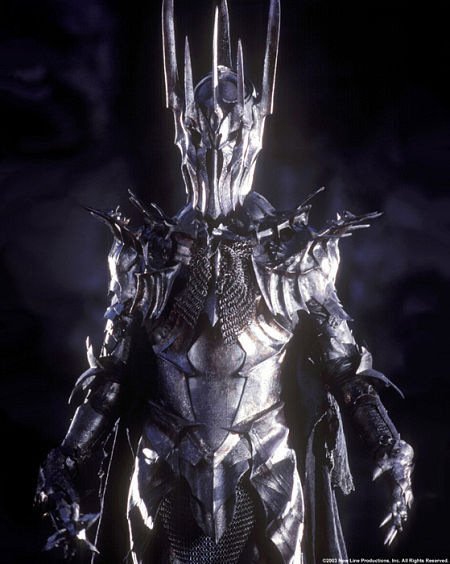

Sauron ( Quenya l'Abominable ou le Détesté ) était à l'origine un Maiar et un suivant d'Aulë dieu de la terre. Mais il fut très vite corrompu par Melkor et devint le plus fidèle et le plus puissant de ses lieutenants.
Après la chute de Morgoth, il fit acte de contrition mais, craignant la colère des Valar, refusa de se rendre à Valinor pour faire acte de soumission. Il se cacha en Terre du Milieu et retomba sous l'emprise du Mal. Gandalf indique dans le Seigneur des Anneaux que Sauron ne redeviendra jamais "gentil", même si de nombreux Âges devaient se passer.
Après une longue période de calme, Sauron, qui espérait que les Valar se soient à nouveau détournés de la Terre du Milieu, tenta de retrouver sa puissance perdue. Il parcourut la terre en se présentant sous une belle apparence, corrompit de nombreux Hommes et tenta de rallier les Elfes à sa cause. Après avoir essuyé un refus de Gil-galad et d'Elrond, Sauron se présenta sous les traits d'Annatar aux portes d'Ost-in-Edhil et séduisit les Elfes d'Eregion. Là, il se heurta à la méfiance de Galadriel qu'il réussit à renverser en suscitant une révolte.
Sauron était le servant de Morgoth, le Seigneur du Mal, le plus puissant des Valar avec son frère Manwë. Malgré cela, Sauron était le maître des Spectres de l'Anneau, autrement appelés Nazgûls, des Orques, des Spectres Ailés, des Trolls, Semi-Trolls, des Gobelins, et de bien sûr, Saroumane, son pantin.
Sauron tel qu'on le connaît est un Seigneur des Ténèbres qui incarne l'ombre, le mal et la destruction. Il sert son maître aveuglement et n'hésite pas à massacrer ses propres orques.